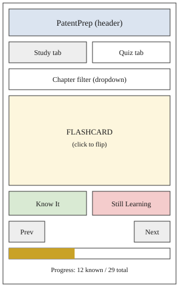
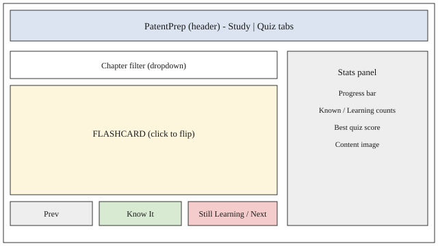
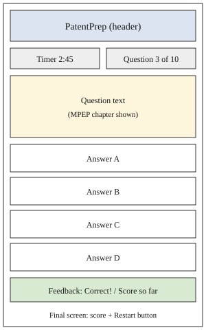
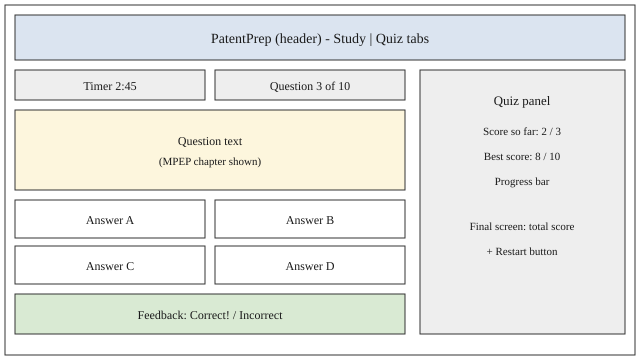

Overview
Purpose
This study tool helps patent bar candidates study the Manual of Patent Examining Procedure through flashcards and timed practice quizzes. Users can study cards by chapter, mark which concepts they know and which they are still learning, and track their progress.
Audience
The audience is patent agent and patent attorney candidates preparing for the USPTO exam, including law students and STEM graduates. These users are busy and study in short blocks of time.
Dynamic elements
- Flashcard study mode: Cards are rendered from a JavaScript array of card objects. Clicking a card flips it to reveal the answer, and Next/Previous buttons move through the deck.
- Chapter filter: A dropdown filters the deck by MPEP chapter using the filter array method, and the deck re-renders with only the matching cards.
- Know / Still Learning buttons: Each card can be marked known or still learning. Conditional branching updates the card's status, the progress bar width, and the counts in the stats area.
- Quiz mode: A timed quiz checks the selected answer with conditional logic, gives immediate right/wrong feedback, and computes the final score using the reduce array method.
- Progress persistence: Card status and quiz history are saved to localStorage so progress survives page reloads. The stats area is built with forEach and map.
- Organization: The code is split into multiple functions: renderDeck, flipCard, filterByChapter, markCard, startQuiz, checkAnswer, updateStats, and saveProgress.
Sample data model (objects in an array):
const cards = [
{ id: 1, chapter: "MPEP 700", question: "What is a restriction requirement?",
answer: "An examiner action requiring election of one invention when two or more distinct inventions are claimed.", known: false },
{ id: 2, chapter: "MPEP 2100", question: "What does 35 USC 103 cover?",
answer: "Nonobviousness: a claimed invention is unpatentable if obvious to a person of ordinary skill in the art.", known: false }
];Branding
Website Logo
Style Guide
Color Palette
Palette URL: https://coolors.co/1f3a5f-c9a227-a43312-3e7c4f| Primary | Secondary | Accent 1 | Accent 2 |
|---|---|---|---|
| #1F3A5F | #C9A227 | #A43312 | #3E7C4F |
Typography
Headings use a Georgia serif stack for a formal feel. Body text uses a system sans-serif for readability and speed.
Pseudocode for your project
- WHEN the page loads, read saved progress from localStorage; IF saved data exists, restore card statuses, ELSE start all cards as "still learning".
- Build the chapter dropdown from the unique chapters in the cards array.
- Call renderDeck with the full cards array: clear the card container, create a card element for the current card, and show its question side.
- WHEN the user clicks the card, flip it (toggle a CSS class) to show the answer side.
- WHEN the user clicks Next or Previous, change the current index; IF at the end of the deck, wrap to the first card; re-render.
- WHEN the user changes the chapter dropdown, filter the cards array by the selected chapter and re-render the deck starting at index 0.
- WHEN the user clicks "Know It" or "Still Learning", set the current card's known property, save progress to localStorage, and call updateStats.
- updateStats: count known cards with reduce, set the progress bar width as a percentage, and update the known/learning/total text.
- WHEN the user starts the quiz, select 10 questions, start a countdown timer, and show one question with answer buttons.
- WHEN the user picks an answer, IF it matches the correct answer, add a point and show green feedback, ELSE show red feedback with the correct answer; then advance.
- WHEN the quiz ends (all questions answered OR the timer reaches zero), show the final score, save it to quiz history in localStorage, and offer a restart button.
Wireframes
The app is a single page with two views switched by tabs: a Study view (flashcards) and a Quiz view. Wireframes for both views are below, with the Study view shown in mobile and desktop layouts.
Landing page (Study view)
The landing page opens on the Study view. The header carries the logo and the Study/Quiz tabs. Below it, a chapter filter dropdown, then the flashcard itself: clicking the card flips it, and the Know It and Still Learning buttons sit directly under it with Prev/Next navigation. A progress bar and known/total counts close the page on mobile. On wider screens (700px and up) the stats move into a side panel next to the card, and the page's one content image (patent documents, with descriptive alt text) appears there.


Quiz view
The Quiz view keeps the same header and shell. A timer and question counter sit above the question card, followed by four answer buttons. Feedback (correct or incorrect, with the score so far) appears under the answers after each pick. When the quiz ends, the final screen shows the total score, the best previous score from localStorage, and a restart button.

